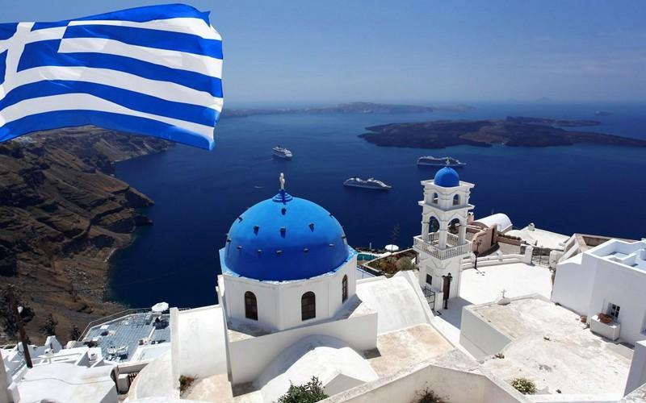
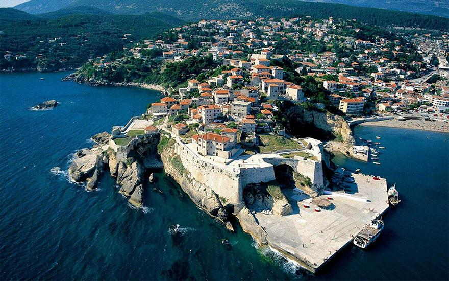
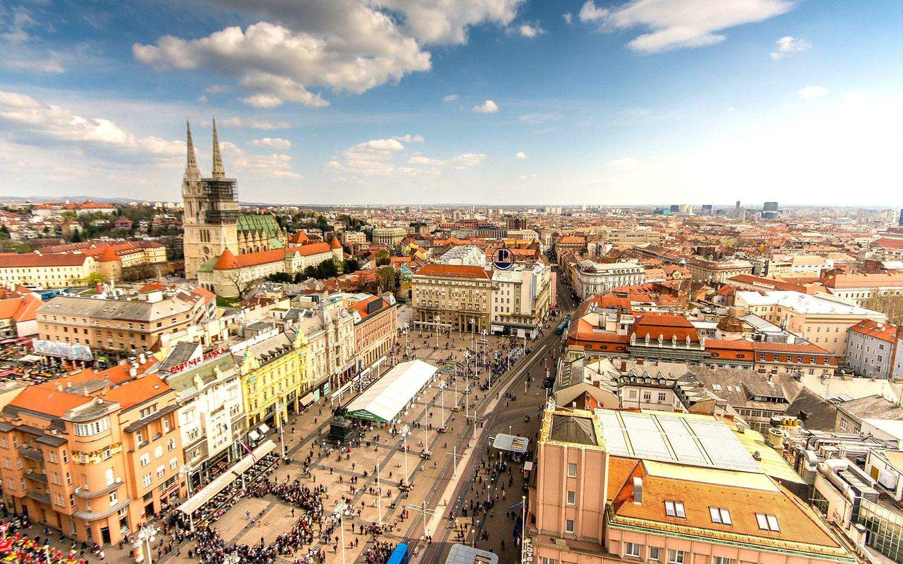
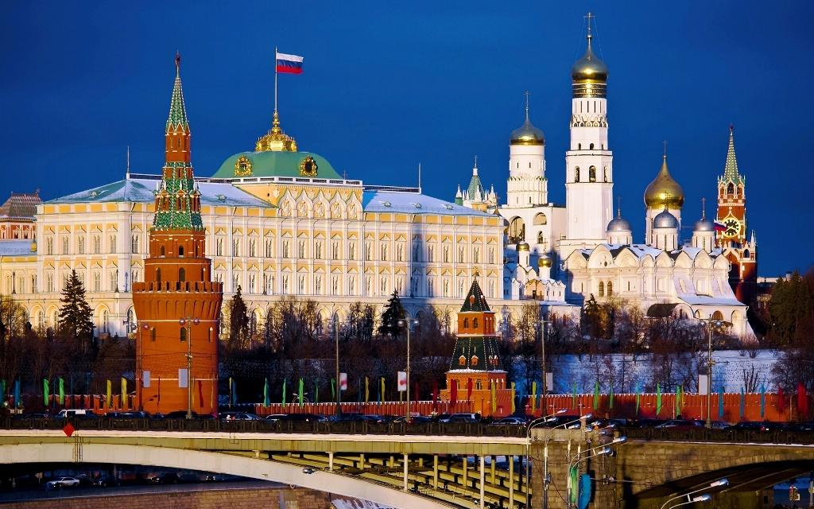

Grčka - opis
GRČKA, zvanično Republika Grčka, smeštena je na krajnjem jugoistoku Evrope, na jugu Balkanskog poluostrva. Graniči se sa Albanijom, Republikom Makedonijom, Turskom. Obuhvata površinu od 132 000 km2. Pored kontinentalnog dela obuhvata preko 1400 ostrva. Obala joj je razuđena sa dužinom od 13 676 km, reljefno je pretežno planinska, a na planini Olimp je najviša tačka sa visinom od 2911 m.
Grčka ima nešto manje od 11 miliona stanovnika, a najviše njih je koncentrisano oko tri najveća grada, Atine, koja je i glavni grad, Soluna i Patre. 95% stanovništva čine grci, stoga je Grčka jedna od etnički najhomogenijih zemalja. U verskom pogledu dominira pravoslavno hrišćanstvo, okupljeno oko Grčke pravoslavne crkve i Carigradske patrijaršije.

Crna Gora - opis
CRNA GORA je smeštena u jugoistočnoj Evropi, na Balkanskom poluostrvu. Crnogorski gradovi protkani arhitekturom raznih perioda oduzimaju dah i na trenutak vraćaju u vreme kada su nastajali. More, jezera, kanjoni, planine omogućavaju da svako pronađe najbolji način da se kvalitetno odmori. U jednom danu, radoznali putnik može sebi priuštiti jutarnju kafu na jednoj od mnogobrojnih plaža Budvanske rivijere, ručak uz pesmu ptica na Skadarskom jezeru i večeru uz ognjište na obroncima velelepne planine Durmitor. Sve to odlikuje Crnu Goru kao turisticku destinaciju koja ima dosta toga da pruži.
Crna Gora zaista obiluje raznolikim lepotama koje privlače posetioce iz celog sveta. Od prelepih plaža duž Jadranskog mora do netaknute prirode u unutrašnjosti zemlje, Crna Gora nudi nezaboravna iskustva za sve vrste putnika.
Crna Gora zaista obiluje raznolikim lepotama koje privlače posetioce iz celog sveta. Od prelepih plaža duž Jadranskog mora do netaknute prirode u unutrašnjosti zemlje, Crna Gora nudi nezaboravna iskustva za sve vrste putnika. Na primer, Budvanska rivijera privlači ljude svojim belim peščanim plažama i tirkiznim vodama, pružajući savršeno mesto za opuštanje i sunčanje. Ovde, putnici mogu uživati u jutarnjoj kafi uz šum talasa i osvežavajući povetarac sa mora. Zatim, Skadarsko jezero, najveće jezero na Balkanskom poluostrvu, predstavlja raj za ljubitelje ptica i prirode. Plovidba kroz mirne vode jezera omogućava posetiocima da se opuste i uživaju u bogatstvu biljnog i životinjskog sveta, dok ručak na obali jezera pruža priliku da se okrepe uz lokalne specijalitete dok slušaju pesmu ptica.

Hrvatska - opis
HRVATSKA je država u južnoj Evropi čiji je glavni grad Zagreb.Ona je geografski panonska, sredozemna i balkanska zemlja. Hrvatska ima oblik potkovice koja se proteže od Vukovara na severoistoku preko Zagreba na zapadu do Dubrovnika na krajnjem jugu. Reljefno i klimatski je vrlo raznolika zemlja.
Hrvatska, sa svojim jedinstvenim geografskim položajem i raznolikim reljefom, predstavlja pravu riznicu prirodnih lepota i kulturnog nasleđa. Ova zemlja, smeštena na raskrsnici različitih geografskih područja, kombinuje panonsku ravnicu, mediteransku obalu i planinski predeo Balkanskog poluostrva.
Glavni grad Zagreb je kulturno i političko središte Hrvatske, gde se susreću moderna energija i bogata istorija. Grad nudi mnoštvo muzeja, galerija, parkova i arhitektonskih bisera koji oduzimaju dah svojom lepotom.
Duž obale Jadranskog mora, Hrvatska često nazivana "zemljom hiljadu ostrva", privlači posetioce svojim tirkiznim vodama, slikovitim gradovima i idiličnim plažama. Gradovi poput Dubrovnika, Splita i Rovinja odišu istorijskim šarmom i kulturom, dok nacionalni parkovi kao što su Plitvička jezera i Krka pružaju nezaboravna prirodna iskustva.

Rusija - opis
RUSIJA - savezna je država koja se prostire u istočnoj evropi i severnoj Aziji. Rusija je najveća država na svetu. Po broju stanovnika je na devetom mestu na svetu. Zvanični jezik je ruski a glavni i najveći grad je Moskva. Rusija je jedina država na svetu koja izlazi na dvanaest mora. Planinski lanac Ural, koji razdvaja Rusiju na evropski i azijski deo, najstariji je planinski lanac na svetu. Površina Sibira je 9,6 miliona kvadratnih kilometara što čini 9% ukupne zemljine površine.
Rusija zaista impresionira svojom ogromnom teritorijom, bogatom istorijom i raznovrsnom prirodom. Kao najveća država na svetu, ona obuhvata veliki deo evropskog i azijskog kontinenta, pružajući raznolikost pejzaža i kultura.
Glavni grad Moskva, sa svojim impozantnim Kremljom i Crvenim trgom, predstavlja političko, ekonomsko i kulturno srce Rusije. Grad je dom brojnim muzejima, galerijama i istorijskim spomenicima koji oslikavaju bogatu prošlost i kulturno nasleđe zemlje.
Sibirska regija, sa svojim ogromnim prostranstvima i divljom prirodom, čini značajan deo teritorije Rusije. Ovde se nalaze neke od najvećih reka, jezera i šuma na svetu, pružajući dom brojnim retkim životinjskim vrstama kao što su sibirski tigar i beli medved.

Švajcarska - opis
ŠVAJCARSKA - Švajcarska konfederacija je bogata i uređena zemlja u srcu Evrope, nadaleko čuvena po satovima, siru i čokoladi. Najvećim delom svoje teritorije obuhvata Alpe, sastoji se od 26 kantona, ravnopravni jezici kojima govori oko sedam i po miliona stanovnika su francuski, nemački, italijanski i romanš (retoromanski jezik kojim se služi oko 35.000 ljudi u kantonu Graubinden). Glavni grad je Bern, dok je valuta i posle svih pritisaka Evropske unije ostao franak. Većinu stanovnika čine rimokatolici, ali odmah za njima su protestanti i prema poslednjem popisu preko 20 procenata stanovnika čine stranci.
Švajcarska je poznata po svojoj preciznoj izradi satova, vrhunskom siru i neodoljivoj čokoladi. Ovi proizvodi su postali simbol kvaliteta i izvrsnosti švajcarske industrije.
Sa 26 kantona, Švajcarska je jedna od retkih zemalja koja praktikuje federalizam, dajući veliku autonomiju svojim regijama. Ovde se govore četiri zvanična jezika - francuski, nemački, italijanski i romanš, što dodatno naglašava multikulturalni karakter zemlje.
Glavni grad Bern odiše istorijom i arhitekturom, sa svojim prepoznatljivim starim gradom koji je pod zaštitom UNESCO-a. Grad je simbol demokratije i neutralnosti, vrednosti koje Švajcarska veoma ceni.